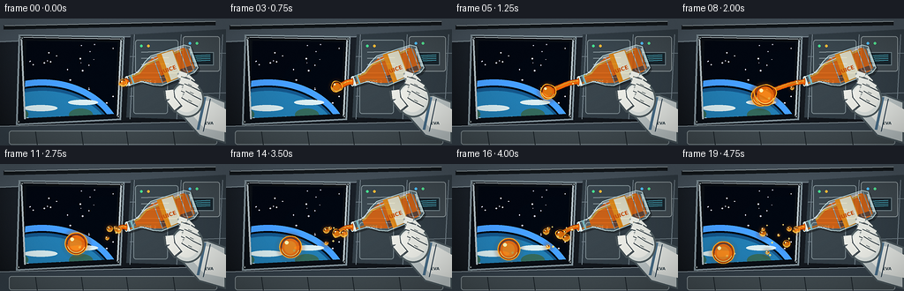
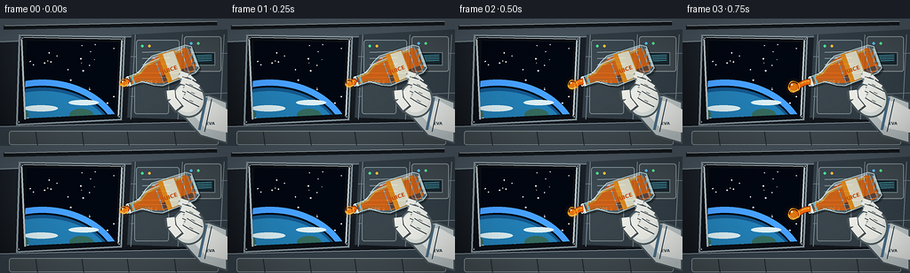

CODING AGENTS AS PIXEL WORLD MODELS
traex/GPT-5.6-Sol · phygen_003
点击播放 · 原生 RGB 像素
逐轮保存的候选
回放视频、检查图与代码变化。
每份候选均可单独播放。实际图片检查记录在下方工具轨迹中。
候选 01播放与检查图
点击播放 · 原生 RGB 像素


展开代码变化
--- 上一保存版本
+++ 本次保存版本
@@ -0,0 +1,352 @@
+from pathlib import Path
+import math
+import numpy as np
+import cv2
+from PIL import Image, ImageDraw, ImageFont, ImageFilter
+import artifact_io
+
+# Deterministic procedural illustration of juice behaving in microgravity.
+W, H, N = 256, 144, 20
+S = 4
+SW, SH = W*S, H*S
+rng = np.random.default_rng(37)
+
+
+def sc_point(p):
+ return (int(round(p[0]*S)), int(round(p[1]*S)))
+
+def sc_box(b):
+ return tuple(int(round(v*S)) for v in b)
+
+def sc_poly(points):
+ return [sc_point(p) for p in points]
+
+def smoothstep(x):
+ x = np.clip(x, 0.0, 1.0)
+ return x*x*(3.0-2.0*x)
+
+def rgba_layer():
+ return Image.new('RGBA', (SW, SH), (0,0,0,0))
+
+def add_layer(base, layer):
+ return Image.alpha_composite(base, layer)
+
+def font(size, bold=False):
+ paths = [
+ '/usr/share/fonts/truetype/dejavu/DejaVuSans-Bold.ttf' if bold else '/usr/share/fonts/truetype/dejavu/DejaVuSans.ttf',
+ '/usr/share/fonts/truetype/liberation2/LiberationSans-Bold.ttf' if bold else '/usr/share/fonts/truetype/liberation2/LiberationSans-Regular.ttf'
+ ]
+ for p in paths:
+ try: return ImageFont.truetype(p, size*S)
+ except OSError: pass
+ return ImageFont.load_default()
+
+# Coordinate system for tilted bottle: mouth -> base.
+MOUTH = np.array([143.0, 71.5])
+U = np.array([0.9397, -0.3420])
+V = np.array([0.3420, 0.9397])
+OUT = -U
+
+def P(along, across=0.0):
+ q = MOUTH + U*along + V*across
+ return (float(q[0]), float(q[1]))
+
+
+def make_background():
+ # Cool metallic cabin gradient with a vignette.
+ yy, xx = np.mgrid[0:SH, 0:SW]
+ x = xx / S; y = yy / S
+ base = np.zeros((SH,SW,4), np.uint8)
+ lum = 30 + 17*(1-y/H) + 7*np.sin(x/36) - 10*((x-W/2)/(W/2))**2
+ base[...,0] = np.clip(lum*0.72,0,255)
+ base[...,1] = np.clip(lum*0.88,0,255)
+ base[...,2] = np.clip(lum*1.08,0,255)
+ base[...,3] = 255
+ im = Image.fromarray(base, 'RGBA')
+ d = ImageDraw.Draw(im, 'RGBA')
+
+ # Structural wall panels and perspective seams.
+ d.polygon(sc_poly([(0,0),(256,0),(256,17),(0,27)]), fill=(72,84,94,255))
+ d.polygon(sc_poly([(0,122),(256,116),(256,144),(0,144)]), fill=(52,63,72,255))
+ d.line(sc_poly([(0,26),(256,16)]), fill=(133,147,155,150), width=1*S)
+ d.line(sc_poly([(0,122),(256,116)]), fill=(140,153,160,110), width=1*S)
+ d.polygon(sc_poly([(148,18),(256,12),(256,116),(143,112)]), fill=(50,61,69,255))
+ for x0 in [152,205,252]:
+ d.line(sc_poly([(x0,18),(x0-5,114)]), fill=(113,127,136,115), width=S)
+ for y0 in [43,88]:
+ d.line(sc_poly([(147,y0),(256,y0-4)]), fill=(113,127,136,100), width=S)
+
+ # Window recess and outer frame.
+ outer = [(21,18),(141,20),(137,115),(18,121)]
+ inner = [(30,25),(133,27),(130,108),(27,113)]
+ d.polygon(sc_poly(outer), fill=(11,16,22,255), outline=(129,145,153,255), width=2*S)
+ d.line(sc_poly([(23,21),(139,23)]), fill=(205,216,219,160), width=S)
+ d.polygon(sc_poly(inner), fill=(3,9,18,255))
+
+ # Space view clipped to trapezoidal viewport.
+ view = rgba_layer()
+ vd = ImageDraw.Draw(view, 'RGBA')
+ # faint deep-space gradient
+ vd.rectangle((0,0,SW,SH), fill=(2,7,17,255))
+ stars = [(float(rng.uniform(31,130)), float(rng.uniform(29,104)), float(rng.uniform(.35,1.0))) for _ in range(36)]
+ for sx,sy,sr in stars:
+ c=int(145+rng.uniform(40,105))
+ vd.ellipse(sc_box((sx-sr,sy-sr,sx+sr,sy+sr)), fill=(c,c,int(min(255,c+18)),220))
+ # Earth limb: layered atmosphere and mottled clouds.
+ vd.ellipse(sc_box((-38,78,132,210)), fill=(20,86,138,255))
+ vd.ellipse(sc_box((-34,82,130,206)), fill=(35,126,179,255))
+ vd.arc(sc_box((-42,73,137,213)), 202, 341, fill=(93,211,255,235), width=3*S)
+ vd.arc(sc_box((-45,69,140,217)), 202, 341, fill=(70,158,255,90), width=7*S)
+ for cloud in [(-5,111,37,119),(27,98,65,105),(52,111,94,117),(4,130,49,137),(77,92,111,98)]:
+ vd.ellipse(sc_box(cloud), fill=(216,235,239,125))
+ for land in [(4,101,32,116),(54,119,85,137),(78,102,105,116)]:
+ vd.ellipse(sc_box(land), fill=(53,106,93,125))
+ mask = Image.new('L',(SW,SH),0)
+ ImageDraw.Draw(mask).polygon(sc_poly(inner), fill=255)
+ im.paste(view, (0,0), mask)
+ d = ImageDraw.Draw(im, 'RGBA')
+
+ # Thick inner frame details/fasteners.
+ for a,b in [((24,22),(28,114)),((137,24),(133,111))]:
+ d.line(sc_poly([a,b]), fill=(177,189,194,180), width=2*S)
+ for fx,fy in [(25,22),(138,23),(21,117),(134,111)]:
+ d.ellipse(sc_box((fx-1.5,fy-1.5,fx+1.5,fy+1.5)), fill=(205,214,215,255), outline=(40,48,52,255), width=S)
+
+ # Equipment cabinets on right, softly behind foreground action.
+ d.rounded_rectangle(sc_box((153,24,202,62)), radius=3*S, fill=(59,72,80,255), outline=(127,142,148,180), width=S)
+ d.rounded_rectangle(sc_box((207,20,249,60)), radius=3*S, fill=(64,74,80,255), outline=(135,146,150,180), width=S)
+ d.rounded_rectangle(sc_box((151,66,190,108)), radius=3*S, fill=(57,68,75,255), outline=(117,131,137,150), width=S)
+ for px,py,col in [(160,31,(72,220,144,255)),(168,31,(245,184,56,255)),(215,28,(83,190,245,255)),(223,28,(84,221,143,255))]:
+ d.ellipse(sc_box((px-1.5,py-1.5,px+1.5,py+1.5)), fill=col)
+ for y0 in [38,45,52]:
+ d.line(sc_poly([(160,y0),(191,y0-1)]), fill=(148,162,167,110), width=S)
+ d.text(sc_point((158,69)), 'NODE 2', font=font(4.5,True), fill=(180,193,198,175))
+ d.rectangle(sc_box((215,38,242,53)), fill=(25,39,47,255), outline=(114,132,139,170), width=S)
+ for k in range(4):
+ d.line(sc_poly([(218,42+k*2),(238,41+k*2)]), fill=(73,170,189,120), width=S)
+
+ # foreground overhead handrail and bottom stowage, increasing depth.
+ d.line(sc_poly([(4,10),(244,5)]), fill=(19,24,28,230), width=5*S)
+ d.line(sc_poly([(5,8),(244,3)]), fill=(155,167,171,210), width=S)
+ d.rounded_rectangle(sc_box((10,127,246,143)), radius=3*S, fill=(65,75,80,255), outline=(126,138,143,150), width=S)
+ for x0 in [40,92,143,196]:
+ d.line(sc_poly([(x0,128),(x0+2,143)]), fill=(31,39,44,180), width=S)
+
+ # Static fine sensor noise / material grain.
+ arr = np.asarray(im).copy()
+ grain = rng.normal(0, 1.35, (SH,SW,1))
+ arr[...,:3] = np.clip(arr[...,:3].astype(float)+grain,0,255).astype(np.uint8)
+ return Image.fromarray(arr,'RGBA')
+
+BACKGROUND = make_background()
+
+
+def draw_bottle_and_hand(base, t):
+ # Very subtle controlled hand motion, not downward acceleration.
+ wobble = math.sin(t*math.pi*2)*0.35
+ layer = rgba_layer(); d = ImageDraw.Draw(layer,'RGBA')
+
+ # Bottle silhouette / drop shadow.
+ outline_pts = [P(0,-5.2),P(16,-6.0),P(27,-14.0),P(36,-18.2),P(76,-17.0),
+ P(82,-13.0),P(82,13.0),P(76,17.0),P(36,18.2),P(27,14.0),P(16,6.0),P(0,5.2)]
+ shadow = [(x+2.0,y+2.3) for x,y in outline_pts]
+ d.polygon(sc_poly(shadow), fill=(0,0,0,80))
+
+ # Plastic bottle translucent shell.
+ d.polygon(sc_poly(outline_pts), fill=(185,217,220,50), outline=(207,236,238,215), width=1*S)
+
+ # Juice remaining inside bottle. It slowly recedes from the mouth while a wet film remains.
+ recede = 5.0 + 10.0*smoothstep(t)
+ juice_pts = [P(recede,-4.3),P(17,-5.0),P(28,-12.0),P(38,-15.1),P(74,-14.0),
+ P(78,-10.8),P(78,12.0),P(73,14.2),P(38,15.2),P(28,11.4),P(17,5.0),P(recede,4.1)]
+ # Soft fluid layer plus brighter central body.
+ d.polygon(sc_poly(juice_pts), fill=(226,100,12,210))
+ d.line(sc_poly([P(recede,-3.5),P(17,-4.0),P(28,-10.5),P(72,-12.4)]), fill=(255,184,49,160), width=2*S)
+ d.polygon(sc_poly([P(37,7),P(75,8),P(75,13),P(38,14)]), fill=(165,57,5,80))
+
+ # Wet film near neck makes it clear liquid originated here.
+ d.line(sc_poly([P(1,2.7),P(16,3.5),P(27,8)]), fill=(244,126,18,150), width=2*S)
+
+ # Plastic ribs and specular highlights.
+ for along in [38,45,69,76]:
+ d.line(sc_poly([P(along,-16),P(along,16)]), fill=(229,246,245,105), width=S)
+ d.line(sc_poly([P(11,-4.3),P(28,-12),P(70,-14)]), fill=(255,255,255,185), width=1*S)
+ d.line(sc_poly([P(36,-16),P(74,-15)]), fill=(255,255,255,125), width=2*S)
+ d.line(sc_poly([P(80,-11),P(80,11)]), fill=(225,245,243,180), width=2*S)
+
+ # Label wraps around cylinder.
+ lab = [P(43,-17.0),P(62,-16.0),P(62,16.0),P(43,17.0)]
+ d.polygon(sc_poly(lab), fill=(240,236,210,218), outline=(224,144,39,220), width=S)
+ d.polygon(sc_poly([P(43,-17),P(48,-16.5),P(48,16.5),P(43,17)]), fill=(238,143,22,220))
+ # angled label text drawn to a temporary patch, matching bottle tilt.
+ txt = Image.new('RGBA',(30*S,13*S),(0,0,0,0)); td=ImageDraw.Draw(txt)
+ td.text((2*S,1*S),'JUICE',font=font(6,True),fill=(191,73,11,255))
+ txt = txt.rotate(20, resample=Image.Resampling.BICUBIC, expand=True)
+ layer.alpha_composite(txt,(int(179*S),int(47*S)))
+ d = ImageDraw.Draw(layer,'RGBA')
+
+ # Open neck rings and dark opening; no cap, visible ejection point.
+ d.line(sc_poly([P(2,-5.8),P(2,5.8)]), fill=(226,245,244,255), width=2*S)
+ d.line(sc_poly([P(7,-5.8),P(7,5.8)]), fill=(125,190,198,220), width=2*S)
+ d.ellipse(sc_box((MOUTH[0]-2.0,MOUTH[1]-5.2,MOUTH[0]+2.2,MOUTH[1]+5.2)), fill=(77,43,20,230), outline=(221,244,240,245), width=S)
+ d.ellipse(sc_box((MOUTH[0]-1.5,MOUTH[1]-3.9,MOUTH[0]+1.3,MOUTH[1]+3.9)), fill=(224,104,10,245))
+
+ base = add_layer(base, layer)
+
+ # EVA glove behind and around bottle: white forearm enters lower-right.
+ hand = rgba_layer(); g=ImageDraw.Draw(hand,'RGBA')
+ # forearm and cuff
+ g.polygon(sc_poly([(256,94),(256,142),(225,133),(204,109),(213,89),(235,86)]), fill=(190,199,200,255), outline=(75,88,94,255), width=2*S)
+ g.polygon(sc_poly([(256,103),(256,129),(231,124),(213,104),(220,91),(240,94)]), fill=(231,234,230,255))
+ g.line(sc_poly([(232,89),(224,126)]), fill=(76,112,139,255), width=3*S)
+ g.line(sc_poly([(238,91),(230,128)]), fill=(43,65,83,170), width=S)
+ # palm
+ g.ellipse(sc_box((193,71,231,112)), fill=(218,224,221,255), outline=(83,96,100,255), width=2*S)
+ g.ellipse(sc_box((197,75,225,106)), fill=(238,239,233,255))
+ # fingers curling visibly over bottle, each segmented and shaded
+ finger_paths = [([(218,73),(211,66),(202,63)],8.0), ([(223,79),(214,73),(204,70)],8.2),
+ ([(226,87),(216,82),(207,78)],8.4), ([(226,96),(216,91),(208,86)],8.0)]
+ for pts,w in finger_paths:
+ g.line(sc_poly(pts), fill=(88,99,101,120), width=int((w+2)*S))
+ g.line(sc_poly(pts), fill=(231,233,227,255), width=int(w*S))
+ g.line(sc_poly([(pts[-1][0]-1,pts[-1][1]-1),pts[-1]]), fill=(151,161,160,255), width=2*S)
+ # thumb on near side
+ g.line(sc_poly([(202,103),(193,92),(191,81)]), fill=(86,96,99,170), width=12*S)
+ g.line(sc_poly([(201,101),(193,91),(192,81)]), fill=(235,236,230,255), width=9*S)
+ # stitch / knuckle details
+ for x,y in [(213,67),(216,75),(218,84),(216,93)]:
+ g.line(sc_poly([(x-3,y-1),(x+1,y+1)]), fill=(144,153,151,180), width=S)
+ g.text(sc_point((232,116)),'EVA',font=font(4.5,True),fill=(55,72,80,180))
+ return add_layer(base, hand)
+
+
+def wobble_blob_points(cx,cy,r,phase,roundness=1.0):
+ pts=[]
+ for i in range(32):
+ a=2*math.pi*i/32
+ distortion=(1-roundness)*(0.13*math.sin(3*a+phase)+0.06*math.sin(5*a-phase))
+ rr=r*(1+distortion)
+ pts.append((cx+rr*math.cos(a),cy+rr*(0.93+0.07*roundness)*math.sin(a)))
+ return pts
+
+
+def liquid_blob(layer, cx, cy, r, phase=0, roundness=1.0, alpha=255):
+ # Glow, amber edge, orange body, luminous meniscus and window reflection.
+ glow = rgba_layer(); gd=ImageDraw.Draw(glow,'RGBA')
+ gd.ellipse(sc_box((cx-r-2.2,cy-r-2.2,cx+r+2.2,cy+r+2.2)), fill=(244,118,16,52))
+ glow=glow.filter(ImageFilter.GaussianBlur(2.0*S))
+ layer.alpha_composite(glow)
+ d=ImageDraw.Draw(layer,'RGBA')
+ pts=wobble_blob_points(cx,cy,r,phase,roundness)
+ d.polygon(sc_poly(pts), fill=(172,63,4,int(alpha*.96)), outline=(255,176,38,alpha), width=max(S, int(.8*S)))
+ d.ellipse(sc_box((cx-r*.79,cy-r*.73,cx+r*.76,cy+r*.82)), fill=(237,104,8,int(alpha*.92)))
+ d.ellipse(sc_box((cx-r*.56,cy-r*.52,cx+r*.50,cy+r*.61)), fill=(247,130,15,int(alpha*.88)))
+ # shaded rim and highlights create translucent spherical appearance
+ d.arc(sc_box((cx-r*.82,cy-r*.82,cx+r*.82,cy+r*.82)), 20, 165, fill=(255,205,85,int(alpha*.82)), width=max(S,int(1.1*S)))
+ d.arc(sc_box((cx-r*.84,cy-r*.84,cx+r*.84,cy+r*.84)), 175, 325, fill=(112,38,3,int(alpha*.65)), width=max(S,int(1.3*S)))
+ hr=max(.7,r*.16)
+ d.ellipse(sc_box((cx-r*.35-hr,cy-r*.38-hr,cx-r*.35+hr,cy-r*.38+hr)), fill=(255,242,173,int(alpha*.95)))
+ if r>6:
+ d.ellipse(sc_box((cx+r*.23,cy+r*.22,cx+r*.42,cy+r*.41)), fill=(255,166,32,int(alpha*.72)))
+
+
+def draw_liquid(base, t, frame_index):
+ layer=rgba_layer()
+ d=ImageDraw.Draw(layer,'RGBA')
+ mouth=MOUTH.copy()
+ out=OUT.copy()
+ perp=np.array([-out[1],out[0]])
+
+ # Continuous extrusion: a broad filament grows slowly, necks, and pinches off.
+ break_t=0.43
+ if t <= break_t:
+ q=smoothstep(t/break_t)
+ L=4+48*q
+ n=42
+ pts=[]
+ for i in range(n):
+ s=i/(n-1)
+ bend=perp*(3.5*math.sin(math.pi*s)*q + 1.1*math.sin(2*math.pi*s+t*5)*s)
+ p=mouth+out*(L*s)+bend
+ pts.append((p[0],p[1]))
+ # dark meniscus outline, body and central specular strand
+ d.line(sc_poly(pts), fill=(132,46,2,245), width=max(2*S,int((7.5-2*q)*S)), joint='curve')
+ d.line(sc_poly(pts), fill=(239,103,8,255), width=max(2*S,int((5.7-1.1*q)*S)), joint='curve')
+ d.line(sc_poly([(x-0.2,y-1.0) for x,y in pts]), fill=(255,183,45,205), width=max(S,int(1.4*S)), joint='curve')
+ end=np.array(pts[-1])
+ liquid_blob(layer,end[0],end[1],4.5+6.8*q,frame_index*.33,roundness=.35+.55*q)
+ else:
+ # Fresh small tongue continues to leave the open bottle after first pinch-off.
+ q=(t-break_t)/(1-break_t)
+ cycle=(q*1.35) % 1.0
+ L=5+17*smoothstep(cycle)
+ pts=[]
+ for i in range(24):
+ s=i/23
+ p=mouth+out*(L*s)+perp*(1.4*math.sin(math.pi*s)+0.6*math.sin(t*9+s*4))
+ pts.append((p[0],p[1]))
+ d.line(sc_poly(pts), fill=(137,47,2,245), width=int(5.5*S), joint='curve')
+ d.line(sc_poly(pts), fill=(241,107,8,255), width=int(4.1*S), joint='curve')
+ d.line(sc_poly([(x,y-0.8) for x,y in pts]), fill=(255,185,48,190), width=S, joint='curve')
+ end=np.array(pts[-1])
+ liquid_blob(layer,end[0],end[1],3.2+2.3*smoothstep(cycle),frame_index,roundness=.45)
+
+ # Main detached globule: capillary tension rounds it while linear inertia carries it.
+ if t > .31:
+ qb=np.clip((t-.31)/(.12),0,1)
+ break_pos=mouth+out*47+perp*1.0
+ dt=max(0,t-break_t)
+ center=break_pos+out*(86*dt)+perp*(6*dt)
+ # while still attached, interpolate from growing strand tip
+ if t<break_t:
+ center=mouth+out*(42+5*qb)+perp*(3-2*qb)
+ r=10.0+2.8*smoothstep(qb)
+ liquid_blob(layer,center[0],center[1],r,frame_index*.42,roundness=.36+.64*smoothstep((t-.36)/.23))
+
+ # Satellite droplets released at different instants, spreading around the cabin.
+ releases=[(.24,2.2,58,-17),(.38,3.5,67,16),(.49,2.0,78,29),(.61,4.2,52,-24),(.72,1.5,91,10),(.81,2.8,62,25)]
+ for k,(rel,r,vel,side) in enumerate(releases):
+ if t>rel:
+ age=t-rel
+ # Start at the neck, then coast at fixed velocity; side is a non-gravity spread.
+ c=mouth+out*(5+vel*age)+perp*(side*age+1.5*math.sin(age*4+k))
+ grow=smoothstep(age/.08)
+ liquid_blob(layer,c[0],c[1],max(.8,r*grow),k+frame_index*.2,roundness=.8+0.2*grow,alpha=240)
+
+ # Tiny sparkling microdroplets created only after the stream breaks.
+ micro=[(.52,82,-34,1.1),(.57,72,38,.8),(.66,95,-12,1.0),(.75,54,43,.75),(.84,80,-39,.9)]
+ d=ImageDraw.Draw(layer,'RGBA')
+ for k,(rel,vel,side,r) in enumerate(micro):
+ if t>rel:
+ age=t-rel
+ c=mouth+out*(8+vel*age)+perp*(side*age)
+ d.ellipse(sc_box((c[0]-r,c[1]-r,c[0]+r,c[1]+r)),fill=(255,156,30,235),outline=(255,222,124,220),width=S)
+
+ return add_layer(base,layer)
+
+
+def render_frame(i):
+ t=i/(N-1)
+ base=BACKGROUND.copy()
+ # Liquid is rendered before the hand but after the bottle's background; mouth remains unobscured.
+ base=draw_bottle_and_hand(base,t)
+ base=draw_liquid(base,t,i)
+
+ # Final cinematic vignette, restrained to retain visibility.
+ arr=np.asarray(base.convert('RGB')).astype(np.float32)
+ yy,xx=np.mgrid[0:SH,0:SW]
+ nx=(xx-SW/2)/(SW/2); ny=(yy-SH/2)/(SH/2)
+ vig=np.clip(1.04-.16*(nx*nx+ny*ny),.78,1.02)[...,None]
+ arr=np.clip((arr-5)*vig+5,0,255).astype(np.uint8)
+ im=Image.fromarray(arr,'RGB').resize((W,H),Image.Resampling.LANCZOS)
+ # Mild crispness after downsample.
+ return np.asarray(im.filter(ImageFilter.UnsharpMask(radius=.55,percent=55,threshold=3)),dtype=np.uint8)
+
+
+def main():
+ frames=np.stack([render_frame(i) for i in range(N)],axis=0)
+ artifact_io.save(frames,Path(__file__).resolve().parent)
+ print('saved',frames.shape,frames.dtype,'range',int(frames.min()),int(frames.max()))
+
+if __name__=='__main__':
+ main()
可观测工具轨迹
实际执行的命令与返回图片。
命令 1exit 0
/bin/bash -lc "cat prompt.txt && printf '\\n--- GENERATION_RULES.md ---\\n' && cat GENERATION_RULES.md && printf '\\n--- task_spec.json ---\\n' && cat task_spec.json"
命令 2exit 1
/bin/bash -lc "find . -maxdepth 3 -type f -printf '%p\\n' | sort && printf '\\n--- tools ---\\n' && command -v ffmpeg && command -v ffprobe && command -v python3 && python3 - <<'PY' mods=['PIL','cv2','numpy','imageio','matplotlib'] for m in mods: try: x=__import__(m); print(m, getattr(x,'__version__','ok')) except Exception as e: print(m,'MISSING',e) PY"
命令 3exit 0
/bin/bash -lc 'cat artifact_io.py'
命令 4exit 0
/bin/bash -lc "for x in python3 ffmpeg ffprobe convert magick; do printf '%s: ' \""'$x"; command -v "$x" || true; done python3 - <<'"'PY' mods=['PIL','cv2','numpy','imageio','matplotlib'] for m in mods: try: x=__import__(m); print(m, getattr(x,'__version__','ok')) except Exception as e: print(m,'MISSING',e) PY"
命令 5exit 0
/bin/bash -lc "cat > generate.py <<'PY'
from pathlib import Path
import math
import numpy as np
import cv2
from PIL import Image, ImageDraw, ImageFont, ImageFilter
import artifact_io
# Deterministic procedural illustration of juice behaving in microgravity.
W, H, N = 256, 144, 20
S = 4
SW, SH = W*S, H*S
rng = np.random.default_rng(37)
def sc_point(p):
return (int(round(p[0]*S)), int(round(p[1]*S)))
def sc_box(b):
return tuple(int(round(v*S)) for v in b)
def sc_poly(points):
return [sc_point(p) for p in points]
def smoothstep(x):
x = np.clip(x, 0.0, 1.0)
return x*x*(3.0-2.0*x)
def rgba_layer():
return Image.new('RGBA', (SW, SH), (0,0,0,0))
def add_layer(base, layer):
return Image.alpha_composite(base, layer)
def font(size, bold=False):
paths = [
'/usr/share/fonts/truetype/dejavu/DejaVuSans-Bold.ttf' if bold else '/usr/share/fonts/truetype/dejavu/DejaVuSans.ttf',
'/usr/share/fonts/truetype/liberation2/LiberationSans-Bold.ttf' if bold else '/usr/share/fonts/truetype/liberation2/LiberationSans-Regular.ttf'
]
for p in paths:
try: return ImageFont.truetype(p, size*S)
except OSError: pass
return ImageFont.load_default()
# Coordinate system for tilted bottle: mouth -> base.
MOUTH = np.array([143.0, 71.5])
U = np.array([0.9397, -0.3420])
V = np.array([0.3420, 0.9397])
OUT = -U
def P(along, across=0.0):
q = MOUTH + U*along + V*across
return (float(q[0]), float(q[1]))
def make_background():
# Cool metallic cabin gradient with a vignette.
yy, xx = np.mgrid[0:SH, 0:SW]
x = xx / S; y = yy / S
base = np.zeros((SH,SW,4), np.uint8)
lum = 30 + 17*(1-y/H) + 7*np.sin(x/36) - 10*((x-W/2)/(W/2))**2
base[...,0] = np.clip(lum*0.72,0,255)
base[...,1] = np.clip(lum*0.88,0,255)
base[...,2] = np.clip(lum*1.08,0,255)
base[...,3] = 255
im = Image.fromarray(base, 'RGBA')
d = ImageDraw.Draw(im, 'RGBA')
# Structural wall panels and perspective seams.
d.polygon(sc_poly([(0,0),(256,0),(256,17),(0,27)]), fill=(72,84,94,255))
d.polygon(sc_poly([(0,122),(256,116),(256,144),(0,144)]), fill=(52,63,72,255))
d.line(sc_poly([(0,26),(256,16)]), fill=(133,147,155,150), width=1*S)
d.line(sc_poly([(0,122),(256,116)]), fill=(140,153,160,110), width=1*S)
d.polygon(sc_poly([(148,18),(256,12),(256,116),(143,112)]), fill=(50,61,69,255))
for x0 in [152,205,252]:
d.line(sc_poly([(x0,18),(x0-5,114)]), fill=(113,127,136,115), width=S)
for y0 in [43,88]:
d.line(sc_poly([(147,y0),(256,y0-4)]), fill=(113,127,136,100), width=S)
# Window recess and outer frame.
outer = [(21,18),(141,20),(137,115),(18,121)]
inner = [(30,25),(133,27),(130,108),(27,113)]
d.polygon(sc_poly(outer), fill=(11,16,22,255), outline=(129,145,153,255), width=2*S)
d.line(sc_poly([(23,21),(139,23)]), fill=(205,216,219,160), width=S)
d.polygon(sc_poly(inner), fill=(3,9,18,255))
# Space view clipped to trapezoidal viewport.
view = rgba_layer()
vd = ImageDraw.Draw(view, 'RGBA')
# faint deep-space gradient
vd.rectangle((0,0,SW,SH), fill=(2,7,17,255))
stars = [(float(rng.uniform(31,130)), float(rng.uniform(29,104)), float(rng.uniform(.35,1.0))) for _ in range(36)]
for sx,sy,sr in stars:
c=int(145+rng.uniform(40,105))
vd.ellipse(sc_box((sx-sr,sy-sr,sx+sr,sy+sr)), fill=(c,c,int(min(255,c+18)),220))
# Earth limb: layered atmosphere and mottled clouds.
vd.ellipse(sc_box((-38,78,132,210)), fill=(20,86,138,255))
vd.ellipse(sc_box((-34,82,130,206)), fill=(35,126,179,255))
vd.arc(sc_box((-42,73,137,213)), 202, 341, fill=(93,211,255,235), width=3*S)
vd.arc(sc_box((-45,69,140,217)), 202, 341, fill=(70,158,255,90), width=7*S)
for cloud in [(-5,111,37,119),(27,98,65,105),(52,111,94,117),(4,130,49,137),(77,92,111,98)]:
vd.ellipse(sc_box(cloud), fill=(216,235,239,125))
for land in [(4,101,32,116),(54,119,85,137),(78,102,105,116)]:
vd.ellipse(sc_box(land), fill=(53,106,93,125))
mask = Image.new('L',(SW,SH),0)
ImageDraw.Draw(mask).polygon(sc_poly(inner), fill=255)
im.paste(view, (0,0), mask)
d = ImageDraw.Draw(im, 'RGBA')
# Thick inner frame details/fasteners.
for a,b in [((24,22),(28,114)),((137,24),(133,111))]:
d.line(sc_poly([a,b]), fill=(177,189,194,180), width=2*S)
for fx,fy in [(25,22),(138,23),(21,117),(134,111)]:
d.ellipse(sc_box((fx-1.5,fy-1.5,fx+1.5,fy+1.5)), fill=(205,214,215,255), outline=(40,48,52,255), width=S)
# Equipment cabinets on right, softly behind foreground action.
d.rounded_rectangle(sc_box((153,24,202,62)), radius=3*S, fill=(59,72,80,255), outline=(127,142,148,180), width=S)
d.rounded_rectangle(sc_box((207,20,249,60)), radius=3*S, fill=(64,74,80,255), outline=(135,146,150,180), width=S)
d.rounded_rectangle(sc_box((151,66,190,108)), radius=3*S, fill=(57,68,75,255), outline=(117,131,137,150), width=S)
for px,py,col in [(160,31,(72,220,144,255)),(168,31,(245,184,56,255)),(215,28,(83,190,245,255)),(223,28,(84,221,143,255))]:
d.ellipse(sc_box((px-1.5,py-1.5,px+1.5,py+1.5)), fill=col)
for y0 in [38,45,52]:
d.line(sc_poly([(160,y0),(191,y0-1)]), fill=(148,162,167,110), width=S)
d.text(sc_point((158,69)), 'NODE 2', font=font(4.5,True), fill=(180,193,198,175))
d.rectangle(sc_box((215,38,242,53)), fill=(25,39,47,255), outline=(114,132,139,170), width=S)
for k in range(4):
d.line(sc_poly([(218,42+k*2),(238,41+k*2)]), fill=(73,170,189,120), width=S)
# foreground overhead handrail and bottom stowage, increasing depth.
d.line(sc_poly([(4,10),(244,5)]), fill=(19,24,28,230), width=5*S)
d.line(sc_poly([(5,8),(244,3)]), fill=(155,167,171,210), width=S)
d.rounded_rectangle(sc_box((10,127,246,143)), radius=3*S, fill=(65,75,80,255), outline=(126,138,143,150), width=S)
for x0 in [40,92,143,196]:
d.line(sc_poly([(x0,128),(x0+2,143)]), fill=(31,39,44,180), width=S)
# Static fine sensor noise / material grain.
arr = np.asarray(im).copy()
grain = rng.normal(0, 1.35, (SH,SW,1))
arr[...,:3] = np.clip(arr[...,:3].astype(float)+grain,0,255).astype(np.uint8)
return Image.fromarray(arr,'RGBA')
BACKGROUND = make_background()
def draw_bottle_and_hand(base, t):
# Very subtle controlled hand motion, not downward acceleration.
wobble = math.sin(t*math.pi*2)*0.35
layer = rgba_layer(); d = ImageDraw.Draw(layer,'RGBA')
# Bottle silhouette / drop shadow.
outline_pts = [P(0,-5.2),P(16,-6.0),P(27,-14.0),P(36,-18.2),P(76,-17.0),
P(82,-13.0),P(82,13.0),P(76,17.0),P(36,18.2),P(27,14.0),P(16,6.0),P(0,5.2)]
shadow = [(x+2.0,y+2.3) for x,y in outline_pts]
d.polygon(sc_poly(shadow), fill=(0,0,0,80))
# Plastic bottle translucent shell.
d.polygon(sc_poly(outline_pts), fill=(185,217,220,50), outline=(207,236,238,215), width=1*S)
# Juice remaining inside bottle. It slowly recedes from the mouth while a wet film remains.
recede = 5.0 + 10.0*smoothstep(t)
juice_pts = [P(recede,-4.3),P(17,-5.0),P(28,-12.0),P(38,-15.1),P(74,-14.0),
P(78,-10.8),P(78,12.0),P(73,14.2),P(38,15.2),P(28,11.4),P(17,5.0),P(recede,4.1)]
# Soft fluid layer plus brighter central body.
d.polygon(sc_poly(juice_pts), fill=(226,100,12,210))
d.line(sc_poly([P(recede,-3.5),P(17,-4.0),P(28,-10.5),P(72,-12.4)]), fill=(255,184,49,160), width=2*S)
d.polygon(sc_poly([P(37,7),P(75,8),P(75,13),P(38,14)]), fill=(165,57,5,80))
# Wet film near neck makes it clear liquid originated here.
d.line(sc_poly([P(1,2.7),P(16,3.5),P(27,8)]), fill=(244,126,18,150), width=2*S)
# Plastic ribs and specular highlights.
for along in [38,45,69,76]:
d.line(sc_poly([P(along,-16),P(along,16)]), fill=(229,246,245,105), width=S)
d.line(sc_poly([P(11,-4.3),P(28,-12),P(70,-14)]), fill=(255,255,255,185), width=1*S)
d.line(sc_poly([P(36,-16),P(74,-15)]), fill=(255,255,255,125), width=2*S)
d.line(sc_poly([P(80,-11),P(80,11)]), fill=(225,245,243,180), width=2*S)
# Label wraps around cylinder.
lab = [P(43,-17.0),P(62,-16.0),P(62,16.0),P(43,17.0)]
d.polygon(sc_poly(lab), fill=(240,236,210,218), outline=(224,144,39,220), width=S)
d.polygon(sc_poly([P(43,-17),P(48,-16.5),P(48,16.5),P(43,17)]), fill=(238,143,22,220))
# angled label text drawn to a temporary patch, matching bottle tilt.
txt = Image.new('RGBA',(30*S,13*S),(0,0,0,0)); td=ImageDraw.Draw(txt)
td.text((2*S,1*S),'JUICE',font=font(6,True),fill=(191,73,11,255))
txt = txt.rotate(20, resample=Image.Resampling.BICUBIC, expand=True)
layer.alpha_composite(txt,(int(179*S),int(47*S)))
d = ImageDraw.Draw(layer,'RGBA')
# Open neck rings and dark opening; no cap, visible ejection point.
d.line(sc_poly([P(2,-5.8),P(2,5.8)]), fill=(226,245,244,255), width=2*S)
d.line(sc_poly([P(7,-5.8),P(7,5.8)]), fill=(125,190,198,220), width=2*S)
d.ellipse(sc_box((MOUTH[0]-2.0,MOUTH[1]-5.2,MOUTH[0]+2.2,MOUTH[1]+5.2)), fill=(77,43,20,230), outline=(221,244,240,245), width=S)
d.ellipse(sc_box((MOUTH[0]-1.5,MOUTH[1]-3.9,MOUTH[0]+1.3,MOUTH[1]+3.9)), fill=(224,104,10,245))
base = add_layer(base, layer)
# EVA glove behind and around bottle: white forearm enters lower-right.
hand = rgba_layer(); g=ImageDraw.Draw(hand,'RGBA')
# forearm and cuff
g.polygon(sc_poly([(256,94),(256,142),(225,133),(204,109),(213,89),(235,86)]), fill=(190,199,200,255), outline=(75,88,94,255), width=2*S)
g.polygon(sc_poly([(256,103),(256,129),(231,124),(213,104),(220,91),(240,94)]), fill=(231,234,230,255))
g.line(sc_poly([(232,89),(224,126)]), fill=(76,112,139,255), width=3*S)
g.line(sc_poly([(238,91),(230,128)]), fill=(43,65,83,170), width=S)
# palm
g.ellipse(sc_box((193,71,231,112)), fill=(218,224,221,255), outline=(83,96,100,255), width=2*S)
g.ellipse(sc_box((197,75,225,106)), fill=(238,239,233,255))
# fingers curling visibly over bottle, each segmented and shaded
finger_paths = [([(218,73),(211,66),(202,63)],8.0), ([(223,79),(214,73),(204,70)],8.2),
([(226,87),(216,82),(207,78)],8.4), ([(226,96),(216,91),(208,86)],8.0)]
for pts,w in finger_paths:
g.line(sc_poly(pts), fill=(88,99,101,120), width=int((w+2)*S))
g.line(sc_poly(pts), fill=(231,233,227,255), width=int(w*S))
g.line(sc_poly([(pts[-1][0]-1,pts[-1][1]-1),pts[-1]]), fill=(151,161,160,255), width=2*S)
# thumb on near side
g.line(sc_poly([(202,103),(193,92),(191,81)]), fill=(86,96,99,170), width=12*S)
g.line(sc_poly([(201,101),(193,91),(192,81)]), fill=(235,236,230,255), width=9*S)
# stitch / knuckle details
for x,y in [(213,67),(216,75),(218,84),(216,93)]:
g.line(sc_poly([(x-3,y-1),(x+1,y+1)]), fill=(144,153,151,180), width=S)
g.text(sc_point((232,116)),'EVA',font=font(4.5,True),fill=(55,72,80,180))
return add_layer(base, hand)
def wobble_blob_points(cx,cy,r,phase,roundness=1.0):
pts=[]
for i in range(32):
a=2*math.pi*i/32
distortion=(1-roundness)*(0.13*math.sin(3*a+phase)+0.06*math.sin(5*a-phase))
rr=r*(1+distortion)
pts.append((cx+rr*math.cos(a),cy+rr*(0.93+0.07*roundness)*math.sin(a)))
return pts
def liquid_blob(layer, cx, cy, r, phase=0, roundness=1.0, alpha=255):
# Glow, amber edge, orange body, luminous meniscus and window reflection.
glow = rgba_layer(); gd=ImageDraw.Draw(glow,'RGBA')
gd.ellipse(sc_box((cx-r-2.2,cy-r-2.2,cx+r+2.2,cy+r+2.2)), fill=(244,118,16,52))
glow=glow.filter(ImageFilter.GaussianBlur(2.0*S))
layer.alpha_composite(glow)
d=ImageDraw.Draw(layer,'RGBA')
pts=wobble_blob_points(cx,cy,r,phase,roundness)
d.polygon(sc_poly(pts), fill=(172,63,4,int(alpha*.96)), outline=(255,176,38,alpha), width=max(S, int(.8*S)))
d.ellipse(sc_box((cx-r*.79,cy-r*.73,cx+r*.76,cy+r*.82)), fill=(237,104,8,int(alpha*.92)))
d.ellipse(sc_box((cx-r*.56,cy-r*.52,cx+r*.50,cy+r*.61)), fill=(247,130,15,int(alpha*.88)))
# shaded rim and highlights create translucent spherical appearance
d.arc(sc_box((cx-r*.82,cy-r*.82,cx+r*.82,cy+r*.82)), 20, 165, fill=(255,205,85,int(alpha*.82)), width=max(S,int(1.1*S)))
d.arc(sc_box((cx-r*.84,cy-r*.84,cx+r*.84,cy+r*.84)), 175, 325, fill=(112,38,3,int(alpha*.65)), width=max(S,int(1.3*S)))
hr=max(.7,r*.16)
d.ellipse(sc_box((cx-r*.35-hr,cy-r*.38-hr,cx-r*.35+hr,cy-r*.38+hr)), fill=(255,242,173,int(alpha*.95)))
if r>6:
d.ellipse(sc_box((cx+r*.23,cy+r*.22,cx+r*.42,cy+r*.41)), fill=(255,166,32,int(alpha*.72)))
def draw_liquid(base, t, frame_index):
layer=rgba_layer()
d=ImageDraw.Draw(layer,'RGBA')
mouth=MOUTH.copy()
out=OUT.copy()
perp=np.array([-out[1],out[0]])
# Continuous extrusion: a broad filament grows slowly, necks, and pinches off.
break_t=0.43
if t <= break_t:
q=smoothstep(t/break_t)
L=4+48*q
n=42
pts=[]
for i in range(n):
s=i/(n-1)
bend=perp*(3.5*math.sin(math.pi*s)*q + 1.1*math.sin(2*math.pi*s+t*5)*s)
p=mouth+out*(L*s)+bend
pts.append((p[0],p[1]))
# dark meniscus outline, body and central specular strand
d.line(sc_poly(pts), fill=(132,46,2,245), width=max(2*S,int((7.5-2*q)*S)), joint='curve')
d.line(sc_poly(pts), fill=(239,103,8,255), width=max(2*S,int((5.7-1.1*q)*S)), joint='curve')
d.line(sc_poly([(x-0.2,y-1.0) for x,y in pts]), fill=(255,183,45,205), width=max(S,int(1.4*S)), joint='curve')
end=np.array(pts[-1])
liquid_blob(layer,end[0],end[1],4.5+6.8*q,frame_index*.33,roundness=.35+.55*q)
else:
# Fresh small tongue continues to leave the open bottle after first pinch-off.
q=(t-break_t)/(1-break_t)
cycle=(q*1.35) % 1.0
L=5+17*smoothstep(cycle)
pts=[]
for i in range(24):
s=i/23
p=mouth+out*(L*s)+perp*(1.4*math.sin(math.pi*s)+0.6*math.sin(t*9+s*4))
pts.append((p[0],p[1]))
d.line(sc_poly(pts), fill=(137,47,2,245), width=int(5.5*S), joint='curve')
d.line(sc_poly(pts), fill=(241,107,8,255), width=int(4.1*S), joint='curve')
d.line(sc_poly([(x,y-0.8) for x,y in pts]), fill=(255,185,48,190), width=S, joint='curve')
end=np.array(pts[-1])
liquid_blob(layer,end[0],end[1],3.2+2.3*smoothstep(cycle),frame_index,roundness=.45)
# Main detached globule: capillary tension rounds it while linear inertia carries it.
if t > .31:
qb=np.clip((t-.31)/(.12),0,1)
break_pos=mouth+out*47+perp*1.0
dt=max(0,t-break_t)
center=break_pos+out*(86*dt)+perp*(6*dt)
# while still attached, interpolate from growing strand tip
if t<break_t:
center=mouth+out*(42+5*qb)+perp*(3-2*qb)
r=10.0+2.8*smoothstep(qb)
liquid_blob(layer,center[0],center[1],r,frame_index*.42,roundness=.36+.64*smoothstep((t-.36)/.23))
# Satellite droplets released at different instants, spreading around the cabin.
releases=[(.24,2.2,58,-17),(.38,3.5,67,16),(.49,2.0,78,29),(.61,4.2,52,-24),(.72,1.5,91,10),(.81,2.8,62,25)]
for k,(rel,r,vel,side) in enumerate(releases):
if t>rel:
age=t-rel
# Start at the neck, then coast at fixed velocity; side is a non-gravity spread.
c=mouth+out*(5+vel*age)+perp*(side*age+1.5*math.sin(age*4+k))
grow=smoothstep(age/.08)
liquid_blob(layer,c[0],c[1],max(.8,r*grow),k+frame_index*.2,roundness=.8+0.2*grow,alpha=240)
# Tiny sparkling microdroplets created only after the stream breaks.
micro=[(.52,82,-34,1.1),(.57,72,38,.8),(.66,95,-12,1.0),(.75,54,43,.75),(.84,80,-39,.9)]
d=ImageDraw.Draw(layer,'RGBA')
for k,(rel,vel,side,r) in enumerate(micro):
if t>rel:
age=t-rel
c=mouth+out*(8+vel*age)+perp*(side*age)
d.ellipse(sc_box((c[0]-r,c[1]-r,c[0]+r,c[1]+r)),fill=(255,156,30,235),outline=(255,222,124,220),width=S)
return add_layer(base,layer)
def render_frame(i):
t=i/(N-1)
base=BACKGROUND.copy()
# Liquid is rendered before the hand but after the bottle's background; mouth remains unobscured.
base=draw_bottle_and_hand(base,t)
base=draw_liquid(base,t,i)
# Final cinematic vignette, restrained to retain visibility.
arr=np.asarray(base.convert('RGB')).astype(np.float32)
yy,xx=np.mgrid[0:SH,0:SW]
nx=(xx-SW/2)/(SW/2); ny=(yy-SH/2)/(SH/2)
vig=np.clip(1.04-.16*(nx*nx+ny*ny),.78,1.02)[...,None]
arr=np.clip((arr-5)*vig+5,0,255).astype(np.uint8)
im=Image.fromarray(arr,'RGB').resize((W,H),Image.Resampling.LANCZOS)
# Mild crispness after downsample.
return np.asarray(im.filter(ImageFilter.UnsharpMask(radius=.55,percent=55,threshold=3)),dtype=np.uint8)
def main():
frames=np.stack([render_frame(i) for i in range(N)],axis=0)
artifact_io.save(frames,Path(__file__).resolve().parent)
print('saved',frames.shape,frames.dtype,'range',int(frames.min()),int(frames.max()))
if __name__=='__main__':
main()
PY
python3 generate.py"命令 6exit 0
/bin/bash -lc 'du -h pixels.npz index.html inspection.png transition_check.png; ls -lh frames/00.png frames/08.png frames/12.png frames/19.png; git status --short 2>/dev/null || true'
命令 7exit 0
/bin/bash -lc "python3 - <<'PY'
from PIL import Image
import numpy as np, json
from pathlib import Path
p=Path('.')
spec=json.loads(Path('task_spec.json').read_text())
ims=[]
for i in range(spec['frames']):
im=np.asarray(Image.open(f'frames/{i:02d}.png').convert('RGB'))
assert im.shape==(spec['height'],spec['width'],3) and im.dtype==np.uint8
ims.append(im)
a=np.stack(ims)
print('frames',a.shape,a.dtype,'range',a.min(),a.max())
print('mean brightness',round(float(a.mean()),2))
print('mean consecutive pixel MAE:',[round(float(np.abs(a[i].astype(int)-a[i-1]).mean()),2) for i in range(1,len(a))])
# orange moving-liquid proxy, restricted left of neck so bottle contents do not dominate
for i,im in enumerate(a):
yy,xx=np.mgrid[:im.shape[0],:im.shape[1]]
mask=(im[...,0]>160)&(im[...,0]>im[...,1]*1.45)&(im[...,1]>45)&(im[...,2]<75)&(xx<145)
if mask.any(): print(f'{i:02d}: orange-left pixels={mask.sum():4d}, centroid=({xx[mask].mean():5.1f},{yy[mask].mean():5.1f}), x-range={xx[mask].min():3d}..{xx[mask].max():3d}')
else: print(i,'none')
z=np.load('pixels.npz')['pixels']
print('packed tensor',z.shape,z.dtype)
assert z.shape==(144,256,20)
print('validation OK')
PY"保存候选 1 份；完成命令 7 次；可验证图片返回 0 张。原始 API 响应与完整日志保留在本地。